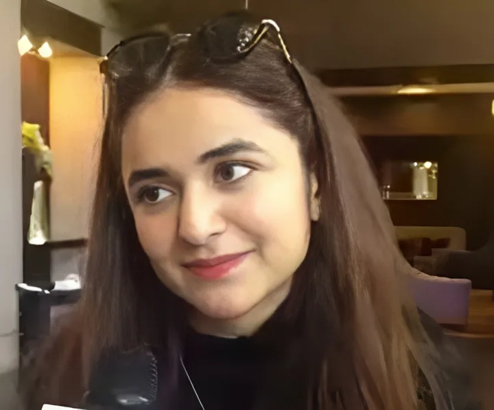
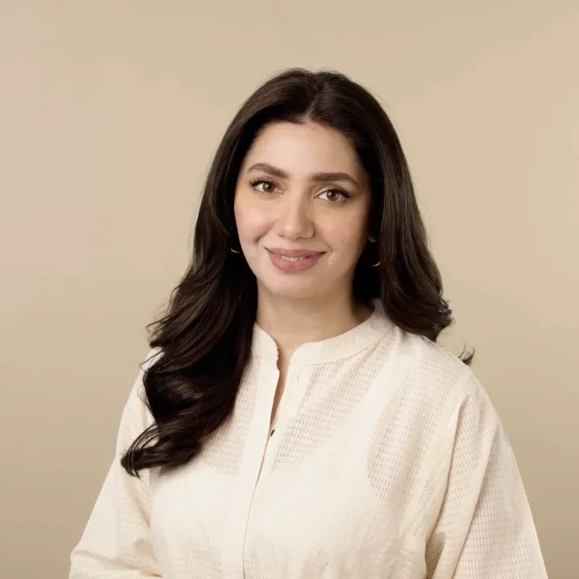
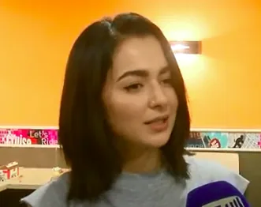
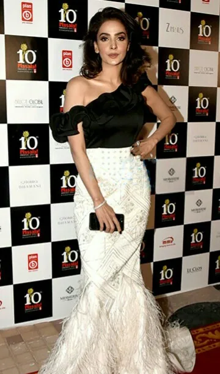
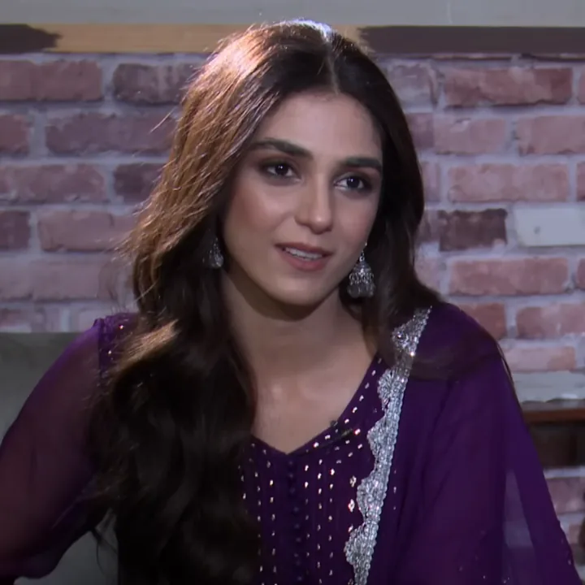
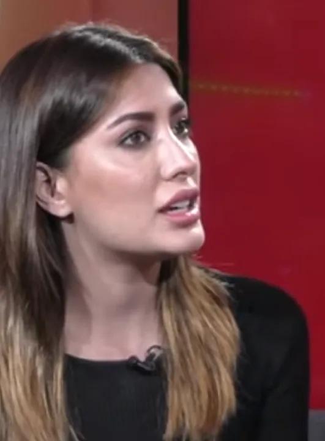

DS
1. Durefishan Saleem
Five years after her debut she has led three of the biggest serials of recent years: Kaisi Teri Khudgarzi, Ishq Murshid and Sanwal Yaar Piya.
Eleven women who are on air, on award stages or all over social media in 2026. Each one has her own page with a full, verified dramas list.
This is our pick of the Pakistani actresses people are talking about most in 2026. We looked at who is leading a serial now, who won at the 2025 Lux Style Awards and HUM Awards, and whose official YouTube uploads draw the largest audiences. The order follows that mix, not a formal ranking. Several of them, including Mahira Khan, Maya Ali, Mehwish Hayat, Saba Qamar and Kubra Khan, also had modelling and campaign work before or alongside acting.
Each page lists every television drama we could verify, with telefilms and films in separate tables, plus awards, YouTube view counts and the actress's official Instagram account.
Five years after her debut she has led three of the biggest serials of recent years: Kaisi Teri Khudgarzi, Ishq Murshid and Sanwal Yaar Piya.

The Express Tribune called her the LSAs' most-awarded female TV actor in 2023, and Tere Bin later added another win. Her film debut, Nayab, won her Film Actress of the Year in 2025.

From Humsafar (2011) to The Legend of Maula Jatt, she is the rare Pakistani star equally established on television and in cinema. In 2026 she returned to TV with Mitti De Baway.
She won best actress at the 10th HUM Awards for Zard Patton Ka Bunn, and in 2026 she played Rabiya in HUM TV's Zanjeerain.
Meray Paas Tum Ho's OST alone has 221 million YouTube views. She has won Lux Style Awards for Pyarey Afzal and Chupke Chupke.

Pakistan's most-followed woman on Instagram, according to 24 News. She won the 2025 Lux Style Award for Kabhi Main Kabhi Tum and then led Meri Zindagi Hai Tu.

From PTV in 2004 to Baaghi, Cheekh and HUM TV's Muamma, Saba Qamar has had the longest leading career of the eleven, and she played the female lead opposite Irrfan Khan in the Hindi film Hindi Medium.
Khuda Aur Mohabbat 3's first episode has 144.8 million views, the most-watched first episode we checked, and Ranjha Ranjha Kardi won her a Critics' Choice LSA.

Mann Mayal won her the Lux Style Award. In 2026 she returned to TV in Green Entertainment's Aik Mohabbat Aur, opposite Ahad Raza Mir.

Dil Lagi was her last serial before films took over. She returned in Geo's Dayan (2025), and in 2026 she became a judge on Pakistan's Got Talent. In October 2026 she began playing Shehnaz in ARY Digital's Rutba, which premiered on 6 October.
She made her name in cinema (Na Maloom Afraad, Jawani Phir Nahi Ani 2) before Sang-e-Mar Mar and Alif. In 2026 she is in ARY Digital's Doctor Bahu.
Our Talk of the Town list has eleven: Durefishan Saleem, Yumna Zaidi, Mahira Khan, Sajal Aly, Ayeza Khan, Hania Aamir, Saba Qamar, Iqra Aziz, Maya Ali, Mehwish Hayat and Kubra Khan. They were chosen for current serials, recent awards and the size of their official YouTube audiences.
Of the official uploads we checked on 2 October 2026, the largest is "Meray Paas Tum Ho | OST | Rahat Fateh Ali Khan | Humayun Saeed | Ayeza Khan |" on ARY Digital HD, with 221.5 million views, featuring Ayeza Khan.
Among the eleven, our sources confirm these marriages: Mahira Khan (to Salim Karim, 2023); Ayeza Khan (to Danish Taimoor, 2014); Iqra Aziz (to Yasir Hussain, 2019); Kubra Khan (to Gohar Rasheed, 2025). Sajal Aly married Ahad Raza Mir in 2020 and their divorce was reported in 2022.
We only use photos with a free licence, from Wikimedia Commons, and credit each one. We could not find a free photo of Durefishan Saleem, Sajal Aly, Ayeza Khan, Iqra Aziz or Kubra Khan, so their cards link to their official Instagram accounts instead.
Each credit was matched to a news report from outlets such as Dawn, The Express Tribune or The News, to the drama's Wikipedia article, or to the broadcaster's official YouTube upload. Credits we could not confirm were left out.
All Pakistani drama actresses · Best Pakistani dramas to watch · New Pakistani dramas 2026 · Lux Style Awards winners · Pakistani drama awards · Showbiz
Facts and credits on this page come from the individual actress pages, which list their sources. YouTube views were read on 2 October 2026.